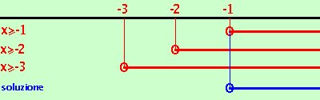
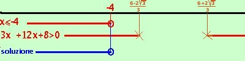
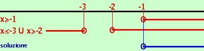

- Si spostano i radicali dalla parte della disequazione dove hanno il segno positivo
sposto il secondo radicale dopo il disuguale cambiandolo di segno
- Si risolve un sistema le cui disequazioni sono i radicandi posti ciascuno maggiore od uguale a zero e si trova l'intervallo in cui la disequazione e' possibile
imposto il sistema
 x+1
x+1  0 0
x+2 0
x+3 0
ottengo
x -1
x -2
x -3

Riporto su un grafico, evidenziando con una linea marcata i valori che risolvono le disequazioni, i valori dove e' accettabile l'uguale li indico con un cerchietto.
Abbiamo come soluzione
x  -1 -1
- Si procede come per le equazioni irrazionali con opportuni elevamenti a potenza per ridurre i radicali, sino ad ottenere un radicale ed un numero
Sono tre radicali: elevo a quadrato da una parte e dall'altra
| ( |
 |
 |
)2 |
|
( |
|
|
|
|
|
)2 |
| x + 1 |
< |
x + 2 |
+ |
x + 3 |
ottengo
|
|
|
|
| x + 1 < x + 2 + 2 |
(x+2)(x+3) |
+ x + 3 |
Porto i termini fuori radice prima del disuguale e lascio la radice dopo
|
|
|
| x + 1 - x - 2 - x - 3 < 2 |
(x+2)(x+3) |
sommo, moltiplico dentro radice ed ottengo
|
|
|
| - x - 4 < 2 |
x2 + 5x + 6 |
- Quello che abbiamo ottenuto e' una disequazione elementare del tipo gia'
visto: va risolta
e' una disequazione irrazionale elementare del secondo tipo che abbiamo visto:
risolviamola; devo risolvere i sistemi:
 |
-x - 4 0
(-x - 4)2 <4(x2 + 5x + 6)
|
|
|
-x - 4 < 0
4(x2 + 5x + 6) 0
|
risolviamo il primo
-x - 4 0
(-x - 4)2 < 4(x2 + 5x + 6)
sviluppiamo le equazioni e dopo alcuni calcoli otteniamo:
x  -4 -4
3x2+12x+8 > 0
La seconda e' verificata per valori esterni all'intervallo
6 - 2 3
6 + 23 3
6 + 23
------------ e
----------------
3
3

Riporto su un grafico, evidenziando con una linea marcata i valori che risolvono le disequazioni, i valori dove e' accettabile l'uguale li indico con un cerchietto. Essendo un sistema prendo le soluzioni comuni
Abbiamo come soluzione
x  -4 -4
risolviamo il secondo
-x - 4 < 0
4(x2 + 5x + 6) 0
Divido la seconda per 4
-x - 4 < 0
x2 + 5x + 6 0
la prima
-x -4 < 0 e' verificata per
x > -4
la seconda x2 + 5x + 6 0 e' verificata per
x -3 U
x -2
calcoli
 Riporto su un grafico, evidenziando con una linea marcata i valori che risolvono le disequazioni, i valori dove e' accettabile l'uguale li indico con un cerchietto.
Riporto su un grafico, evidenziando con una linea marcata i valori che risolvono le disequazioni, i valori dove e' accettabile l'uguale li indico con un cerchietto.
Abbiamo come soluzione
-4 < x -3 U x -2
Ora devo mettere assieme le soluzioni dei due sistemi ed ottengo
x -3 U x -2
- I risultati trovati vanno messi a sistema con l'intervallo in cui e' possibile la disequazione
Quindi faccio un sistema fra le condizioni di realta' delle radici e le soluzioni trovate sopra
x -1
x -3 U x -2

Riporto su un grafico, evidenziando con una linea marcata i valori che risolvono le disequazioni, i valori dove e' accettabile l'uguale li indico con un cerchietto.
Abbiamo come soluzione della disequazione iniziale
| x -1 |
Piuttosto lungo come esercizio, vero?
|